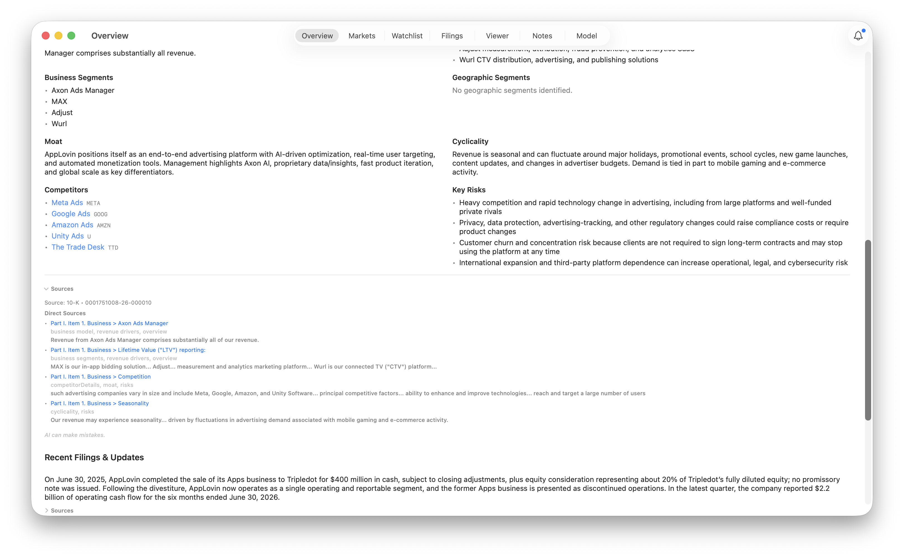
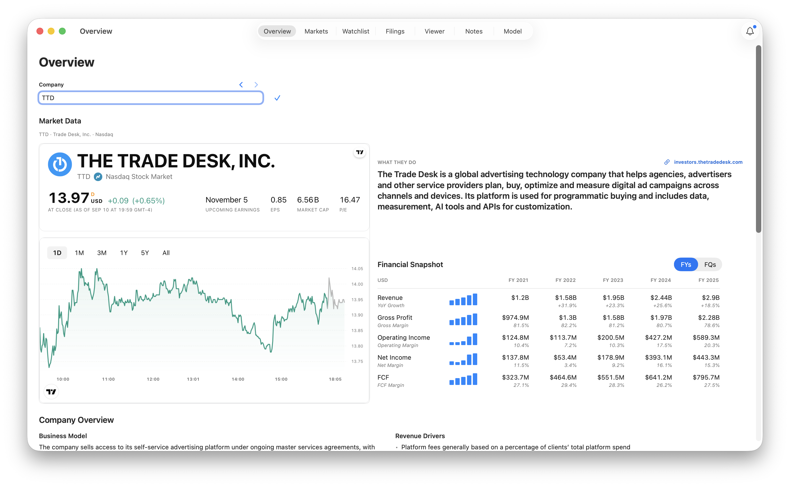
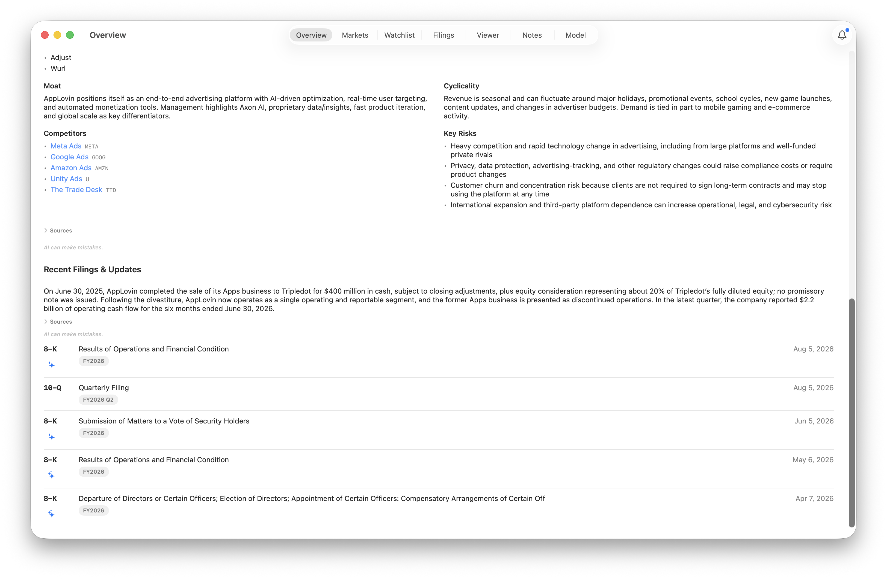

FilrAI Documentation
Overview
Company context, financial results, and the conventions behind the numbers.
Last updated
Company selection & navigation
Selecting a company
Enter a company name or ticker in the Company field, then select a result to load its Overview.

Recently viewed companies
Use the arrows beside Company to move backward or forward through companies you’ve viewed.
Adding to a watchlist
Click + beside the Company field to add the company to a watchlist. A checkmark indicates that it’s already on a watchlist. If you have multiple watchlists, the icon opens a list selector.

Market data & charts
The market data widget is powered by TradingView. The card shows the selected company’s quote, price change, earnings date, EPS, market capitalization, and P/E where available. Refer to the displayed timestamp and market status for the quote’s timing.

Price chart
Use 1D, 1M, 3M, 1Y, 5Y, or All to change the displayed period.
Company context
Company Overview
Generated directly from SEC filings, with direct links to in-line citations. Select a competitor with an embedded link to load its overview.

Sources
Expand Sources to view references and excerpts. Select a citation to open the filing in the Viewer at the cited section.

Financial Snapshot
Metrics gathered from company financials, including revenue, gross profit, operating income, net income, and free cash flow.
Free cash flow is calculated as operating cash flow minus purchases of property, plant, and equipment.

Recent filings & updates
Recent company developments derived from the latest filings, with links to supporting sources.
Select a filing to open it in the Viewer. Use the sparkle icon to generate an AI summary of current events.
